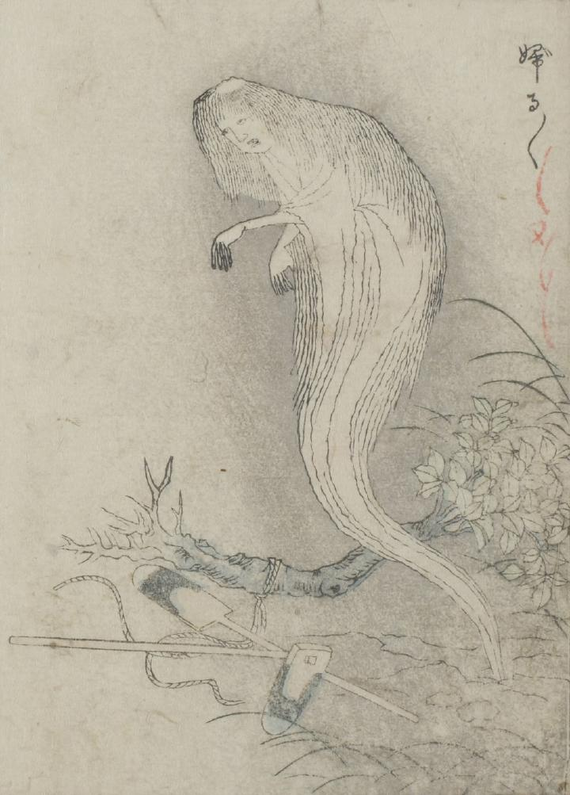

幽霊；ユウレイ

引き抜いた木の根元から現れた女。白衣をまとい長髪で、両手を前に垂らしている。足は描かれていない。
出典：親書誌：U426_nichibunken_0051：怪物画本；カイブツエホン／日付：2006／資源識別子：U426_nichibunken_0051_0012_0000
Copyright (c)2010- International Research Center for Japanese Studies, Kyoto, Japan. All rights reserved.